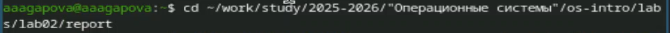
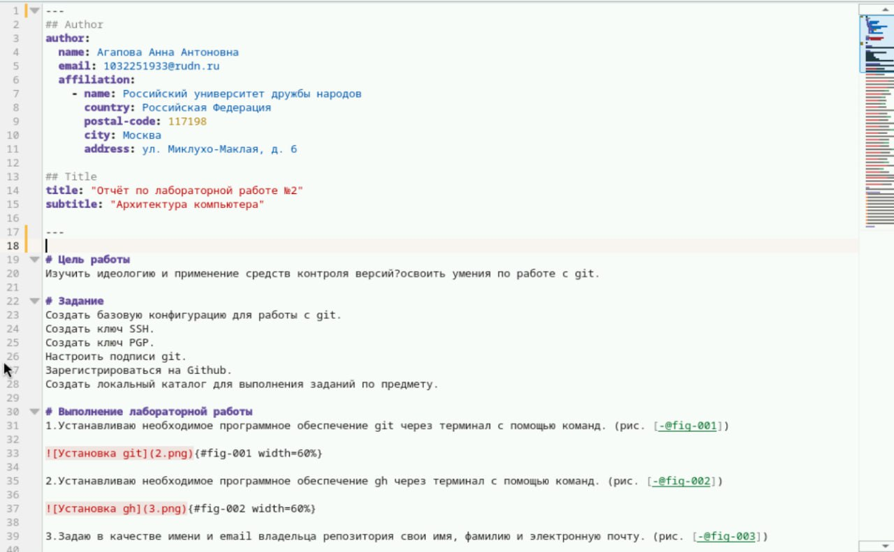
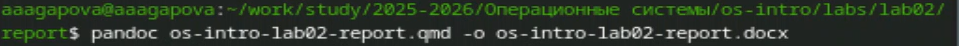
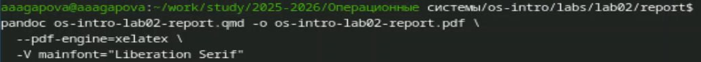
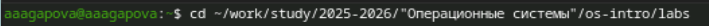
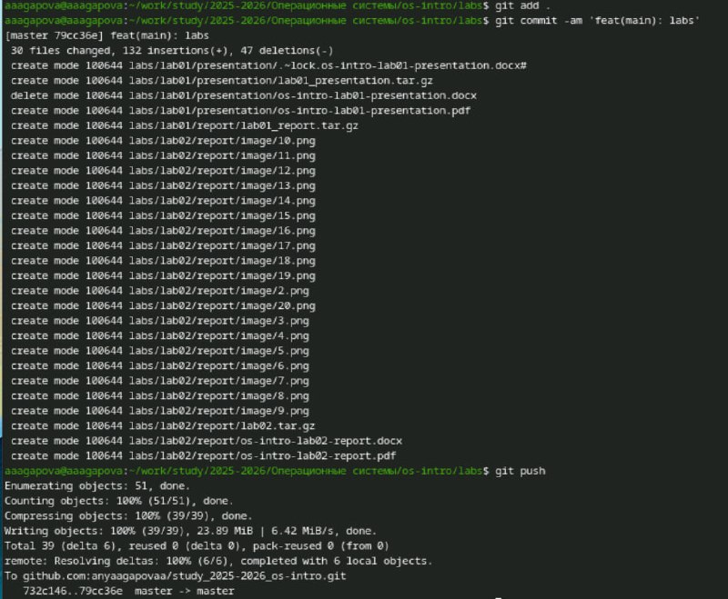

Докладчик
- Агапова Анна Антоновна
- Российский университет дружбы народов им. П. Лумумбы
Цель работы
Научиться оформлять отчёты с помощью легковесного языка разметки
Markdown.
Задание
- Сделайте отчёт по предыдущей лабораторной работе в формате
Markdown.
- В качестве отчёта просьба предоставить отчёты в 3 форматах: pdf,
docx и md (в архиве, поскольку он должен содержать скриншоты, Makefile и
т.д.)
Выполнение лабораторной
работы
- Перехожу в папку.

Переход в папку
- Заполняю отчет.

Заполнение отчета
- Выполняю компиляцию в docx.

Компиляция в docx
- Выполняю компиляцию в pdf.

Компиляция в pdf
- Перехожу в папку labs.

Переход в папку
- Обновляю репозиторий.

Обновление репозитория
Выводы
При выполнении данной лабораторной работы я научилась оформлять
отчеты с помощью легковесного языка разметки Markdown.